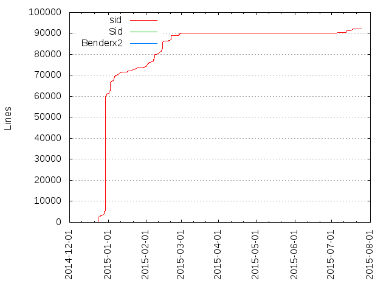
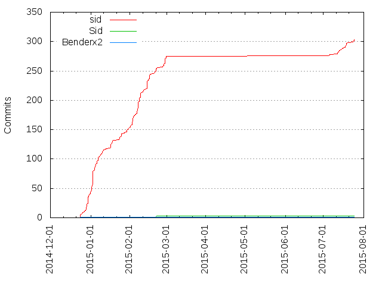

Authors
| Author | Commits (%) | + lines | - lines | First commit | Last commit | Age | Active days | # by commits |
|---|
| sid | 303 (98.70%) | 92222 | 34785 | 2014-12-24 | 2015-07-25 | 212 days, 20:06:28 | 66 | 1 |
| Sid | 3 (0.98%) | 8 | 6 | 2015-02-07 | 2015-02-21 | 14 days, 0:40:19 | 2 | 2 |
| Benderx2 | 1 (0.33%) | 32 | 0 | 2014-12-24 | 2014-12-24 | 0:00:00 | 1 | 3 |


| Month | Author | Commits (%) | Next top 5 | Number of authors |
|---|
| 2015-07 | sid | 28 (100.00% of 28) | | 1 |
| 2015-03 | sid | 4 (100.00% of 4) | | 1 |
| 2015-02 | sid | 118 (97.52% of 121) | Sid | 2 |
| 2015-01 | sid | 113 (100.00% of 113) | | 1 |
| 2014-12 | sid | 40 (97.56% of 41) | Benderx2 | 2 |
| Year | Author | Commits (%) | Next top 5 | Number of authors |
|---|
| 2015 | sid | 263 (98.87% of 266) | Sid | 2 |
| 2014 | sid | 40 (97.56% of 41) | Benderx2 | 2 |
| Domains | Total (%) |
|---|
| gmail.com | 304 (99.02%) |
|---|
| users.noreply.github.com | 3 (0.98%) |
|---|